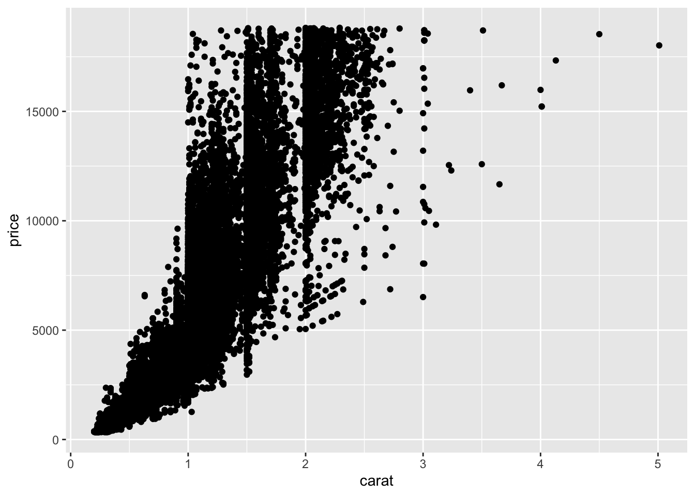

Non-Standard Geometries
Beyond the Basics of Data Visualization
Historically, there have been five plot types that are considered basic or foundational:
- Histograms
- Boxplots
- Barcharts
- Scatterplots
- Line graphs1 (or time series plots)
While you may have never been explicitly told these are the basic plot types, hopefully this list is not surprising to you. It’s likely the case that, similar to the normal distribution, you knew about and were using these before you even knew their names, possibly through Excel or something back before you had taken any statistics courses.
This week, we’re going to learn about plots / geometries outside of these basic plots!
Lollipop plot with geom_segment()
All too often, we see people (students, researchers, newspapers) create barplots for variables that are not counts (e.g., mean salary). A barplot is designed to display the frequency of each level of a categorical variable, so people get confused when they are used to plot other summary statistics.
The lollipop plot solves this problem! A lollipop plot is the combination of two geometries—geom_segment() and geom_point(). The lollipop stick is created with geom_segment() and each lollipop’s head is created with geom_point().
Let’s give this a look using the penguins data from the palmerpenguins package.
species_means <- penguins |>
group_by(species) |>
summarize(mean_flipper = mean(flipper_length_mm, na.rm = TRUE))
ggplot(data = species_means,
mapping = aes(x = mean_flipper, y = species)
) +
geom_segment(aes(yend = species,
x = 0,
xend = mean_flipper),
color = "gray50") +
geom_point(size = 4, color = "steelblue") +
labs(x = "Mean Flipper Length (mm)",
y = "",
title = "Comparison of Flipper Lengths for Different Penguin Species"
)![Lollipop chart titled ‘Comparison of Flipper Lengths for Different Penguin Species’. The x-axis shows mean flipper length in millimeters, and the y-axis lists three species: Adelie, Chinstrap, and Gentoo.Each species has a horizontal line extending from zero to a dot marking its mean flipper length. Adelie is just under 200 mm, Chinstrap is around 195 mm, and Gentoo is the highest at just over 215 mm. The chart highlights that Gentoo penguins have the longest average flipper length, followed by Chinstrap, then Adelie.](alt-geoms_files/figure-html/fig-lollipop-plot-1.png)
Ridgeline plot with geom_density_ridge()
Boxplots are an easy way to assess how different the centers (medians) and spreads (IQR, range) are between groups. However, boxplots do not display the shape of a distribution. Specifically, boxplots hide distributions with multiple modes (peaks).

The ridgeline plot solves this problem! A ridgeline plot is comprised of vertically stacked density plots. Because the ridgelines are stacked vertically, the categorical variable needs to be mapped to the y-axis.

If you’re not a fan of the ridges touching each other, then the scale argument was made just for you! If you set scale = 1 (inside geom_density_ridges()) then the top of each ridge will be the bottom of the next ridge.
Adding color to a plot is a fun way to make it more engaging. Here, color ridges are much more exciting than gray ridges. However, when we incorporate a color (or fill) aesthetic, ggplot2 automatically creates a legend for us. That’s nice most of the time, but here the information from the legend (the values of species) is already encoded in y-axis. So, the legend has redundant information. We don’t want to have redundant information in our plots, which is why we removed the legend (theme(legend_position = “none")).
Area plot with geom_ribbon()
There are two types of area plots, one emphasizes the total area while the other emphasizes the area between two groups. The New York Times loves to use area plots, so we’ve pulled out two examples from the What’s going on in this graph collection:
Total Area
![Stacked area chart titled 'World electricity generation' showing global generation by source from 2000 to about 2022 in million gigawatt-hours. Fossil fuels (coal, gas, oil) are shown in dark blue-gray tones and clean sources (nuclear, hydroelectric and other, wind and solar) in yellow-orange tones. Coal is the largest source throughout, rising overall with a slight dip around 2020. Gas steadily increases, while oil remains relatively small and flat. Hydroelectric and nuclear grow gradually. Wind and solar expand rapidly after 2010. Total generation increases from roughly 14 million to nearly 27 million gigawatt-hours over the period.](images/nyt-area.png) Notice how the area always starts at 0 and goes up to wherever the highest \(y\) value is for that group.
Notice how the area always starts at 0 and goes up to wherever the highest \(y\) value is for that group.
Area Between Groups
![Line chart titled 'Summer temperatures in Las Vegas' showing trends from about 1950 to 2022. A red line represents average daily highs, which fluctuate around 100°F and increase slightly overall, marked as 'Daily highs +2°F.' A purple line represents overnight lows, which rise more sharply from about 70°F to around 80°F, marked as 'Overnight lows +11°F.' Shaded areas emphasize the space between highs and lows. The chart highlights that nighttime temperatures have increased much more than daytime highs over time.](images/nyt-ribbon.png) Notice how the area starts at the value of the lower group and goes up to the value of the higher group.
Notice how the area starts at the value of the lower group and goes up to the value of the higher group.
The total area plot can be made with geom_area() and the between area plot can be made with geom_ribbon(). Let’s explore each of these functions!
Total Area
Typically, area plots are variants of line plots. So, let’s use the gapminder data from the gapminder package to explore life expectancy over time. Since there are multiple countries for each continent (for each year), we will need to summarize these values before plotting2
# A tibble: 6 × 3
year continent mean_life
<int> <fct> <dbl>
1 1952 Africa 39.1
2 1952 Americas 53.3
3 1952 Asia 46.3
4 1952 Europe 64.4
5 1952 Oceania 69.3
6 1957 Africa 41.3Okay, now that we’ve summarized our data, let’s try making an area plot!
![Stacked area chart titled ‘Mean Life Expectancy Over Time’ with year on the x-axis (1950s to early 2000s) and life expectancy on the y-axis. The legend lists five continents: Africa, Americas, Asia, Europe, and Oceania. However, only a single large purple area (Oceania) is visible, filling the entire chart from about 70 to just over 80 years. The other continents are hidden behind it because the stacking order is incorrect. The plot demonstrates how a poorly ordered stacked area chart can obscure all but the top layer, making comparisons impossible.](alt-geoms_files/figure-html/fig-total-area-1.png)
Huh, that doesn’t look great. It looks like we are only getting a plot for Oceania. We can try making the areas more transparent (with alpha) and see if we can uncover the other groups.
![Stacked area chart titled ‘Mean Life Expectancy Over Time’ with years from the 1950s to the early 2000s on the x-axis and life expectancy on the y-axis. Five semi-transparent colored areas represent Africa, Americas, Asia, Europe, and Oceania. All continents show steady increases over time. Africa is lowest throughout (rising from around 40 to mid-50s), followed by Asia and the Americas. Europe is higher (mid-60s to high-70s), and Oceania is highest (around 70 to just over 80). Because the areas overlap and are stacked with transparency, the chart is cluttered and difficult to compare accurately across continents.](alt-geoms_files/figure-html/fig-area-transparent-1.png)
Okay! We do have every area plot, it’s just hard to see them. Looking at the plot we can tell that the tallest line is Oceania and the shortest line is Africa. If we do some clever reordering of the levels of continent then we should be able to see every group.
In this case, we want to reorder continent based on the mean life expectancy. We could reorder this by hand, but that sounds like a lot of typing and seems error prone.
Instead, we can use the fct_reorder() function from the forcats package to reorder continent based on mean_life. We need to be sure to specify .desc = TRUE since we want the order to be larges to smallest!
gapminder |>
group_by(year, continent) |>
summarize(mean_life = mean(lifeExp, na.rm = TRUE),
.groups = "drop") |>
mutate(continent = forcats::fct_reorder(continent,
mean_life,
.desc = TRUE)
) |>
ggplot(mapping = aes(x = year,
y = mean_life,
color = continent)) +
geom_line() +
geom_area(mapping = aes(fill = continent),
position = "identity",
alpha = 0.6) +
labs(x = "",
y = "",
title = "Mean Life Expectancy Over Time") ![Stacked area chart titled ‘Mean Life Expectancy Over Time’ with years from the 1950s to the early 2000s on the x-axis and life expectancy on the y-axis. Five colored areas represent Oceania, Europe, Americas, Asia, and Africa, ordered from highest to lowest life expectancy. All continents show steady increases over time. Oceania is highest throughout (around 70 to just over 80 years), followed by Europe, the Americas, and Asia. Africa remains lowest (about 40 to mid-50s). The areas are ordered so that higher life expectancy regions appear on top, making the trends and relative positions easier to compare.](alt-geoms_files/figure-html/fig-area-plot-reordered-1.png)
Area Between Groups
Suppose instead of featuring every continent, we want our plot to display the profound differences in life expectancy between the largest and smallest groups. This is what a ribbon plot accomplishes!
If you look at the documentation for geom_ribbon() you will see that the function requires ymin and ymax aesthetics. These values tell ggplot() where the shading should start and end. Currently, the data we are plotting have one column for continent and one column for mean_life, but we need to have our data structured in such a way that the values for Africa are in one column (for ymin) and the values for Oceania are in a different column (for ymax). So, we are going to need to restructure our date.
# A tibble: 6 × 3
year mean_Africa mean_Oceania
<int> <dbl> <dbl>
1 1952 39.1 69.3
2 1957 41.3 70.3
3 1962 43.3 71.1
4 1967 45.3 71.3
5 1972 47.5 71.9
6 1977 49.6 72.9Now that I’ve pivoted the summary statistics, I have exactly the data I need! The mean_Africa column can be mapped to ymin and the mean_Oceania column can be mapped to ymax. Let’s give it a try!
gapminder |>
filter(continent %in% c("Oceania", "Africa")) |>
group_by(year, continent) |>
summarize(mean_life = mean(lifeExp, na.rm = TRUE),
.groups = "drop") |>
ggplot(mapping = aes(x = year,
y = mean_life,
color = continent)) +
geom_line(linewidth = 2) +
geom_ribbon(data = ribbon_summaries,
mapping = aes(x = year,
ymin = mean_Africa,
ymax = mean_Oceania
),
position = "identity",
inherit.aes = FALSE,
fill = "lightgray") +
labs(x = "",
y = "",
title = "Profound Differences in Life Expectancy",
subtitle = "Comparing Continents with Highest and Lowest Life Expectancy") ![Ribbon plot titled ‘Profound Differences in Life Expectancy’ with the subtitle ‘Comparing Continents with Highest and Lowest Life Expectancy’. The x-axis shows years from the 1950s to the early 2000s, and the y-axis shows life expectancy. Two lines are drawn: Oceania (highest) in teal and Africa (lowest) in red. A shaded gray ribbon fills the vertical space between the two lines, emphasizing the gap. Both continents show steady increases over time, but the distance between them remains large—roughly 25 to 30 years—highlighting the persistent difference in life expectancy.](alt-geoms_files/figure-html/fig-geom-ribbon-1.png)
Voila! We have a ribbon plot highlighting the differences in life expectancy between these two continents. The icing on the cake would be to reorder our legend so it goes in the same order as the plot or even remove the legend in favor of annotations, which we will learn in the next chapter.
Heatmap with geom_tile()
Heatmaps are a visualization which use color intensity to represent the magnitude of values in a dataset. With a heatmap, we can identify patterns quickly, spot trends and anomalies, understand relationships between variables, and compare large amounts of data efficiently.
A simple heatmap could help us spot trends in data collection. Based on the heatmap below, it appears that far more penguins were sampled on the Biscoe Island and the data collection in the first year (2007) was much smaller than the later years.
![Heatmap titled ‘Number of Penguins Sampled Each Year’ with the subtitle ‘Separated by Island of the Palmer Archipelago’. The x-axis shows years 2007, 2008, and 2009, and the y-axis lists three islands: Torgersen, Dream, and Biscoe. Each cell is shaded from dark to light blue to indicate the number of penguins sampled, with lighter shades representing higher counts. Biscoe has the highest counts overall (especially in 2008), Dream has moderate counts across all years, and Torgersen has the lowest counts. The heatmap highlights differences in sampling intensity by island and year.](alt-geoms_files/figure-html/fig-sample-heatmap-1.png)
Another common application of a heatmap is to visualize relationships (correlations) between variables. The first step is to get the pairwise correlations. We like the corrr package for this, since it is compatible with the tidyverse and it return a dataframe.
# A tibble: 4 × 5
term bill_length_mm bill_depth_mm flipper_length_mm body_mass_g
<chr> <dbl> <dbl> <dbl> <dbl>
1 bill_length_mm NA -0.235 0.656 0.595
2 bill_depth_mm -0.235 NA -0.584 -0.472
3 flipper_length_mm 0.656 -0.584 NA 0.871
4 body_mass_g 0.595 -0.472 0.871 NA The only thing different about this output (as compared to the base R cor() function) is that the diagonal entries have correlations of NA instead of 1. Similar to making the area plots between groups, we should notice that these data are not currently in the layout ggplot() expects. Namely, the values of the second variable are spread across the columns. So, we will need to pivot our data before we plot.
penguins_cor <- penguins_cor |>
rename(term1 = term) |>
pivot_longer(cols = -term1,
names_to = "term2",
values_to = "correlation")
penguins_cor# A tibble: 16 × 3
term1 term2 correlation
<chr> <chr> <dbl>
1 bill_length_mm bill_length_mm NA
2 bill_length_mm bill_depth_mm -0.235
3 bill_length_mm flipper_length_mm 0.656
4 bill_length_mm body_mass_g 0.595
5 bill_depth_mm bill_length_mm -0.235
6 bill_depth_mm bill_depth_mm NA
7 bill_depth_mm flipper_length_mm -0.584
8 bill_depth_mm body_mass_g -0.472
9 flipper_length_mm bill_length_mm 0.656
10 flipper_length_mm bill_depth_mm -0.584
11 flipper_length_mm flipper_length_mm NA
12 flipper_length_mm body_mass_g 0.871
13 body_mass_g bill_length_mm 0.595
14 body_mass_g bill_depth_mm -0.472
15 body_mass_g flipper_length_mm 0.871
16 body_mass_g body_mass_g NA Okay, now that the data are in the correct orientation to plot, we want to think about the appearance of the plot. If we were to make a heatmap with these data, the x and y values would have the current labels of term1 and term2 (e.g., "bill_length_mm", "body_mass_g"). These don’t see like the labels we want for a nice looking visual!
Let’s first make a function to reformat the labels. The function should remove the units and the _ from the variable names, and convert the variable names to titles (i.e., Bill Length not bill length).
make_titles <- function(x){
# expects a character or factor as an input
stopifnot(is.character(x) | is.factor(x))
# remove the units at the end of the name
str_remove(x, pattern = "(g|mm)$") |>
# replace all _ with spaces
str_replace_all(pattern = "_", replacement = " ") |>
# remove extra whitespace on left
str_trim(side = "both") |>
# convert the first letter of each word to upper case
str_to_title()
}Okay, now let’s use this function to make nice labels and get our heatmap!
![Heatmap titled ‘Correlation Between Penguin Body Measurements’. Both axes list four numeric variables: Bill Depth, Bill Length, Body Mass, and Flipper Length. Each cell is shaded to show the correlation between a pair of variables, with darker blue indicating stronger positive correlation and darker gray indicating negative correlation. The diagonal cells are gray, representing NA values for each variable correlated with itself. Flipper Length and Body Mass show a strong positive correlation. Bill Length is moderately positively correlated with Body Mass and Flipper Length. Bill Depth shows negative correlations with the other measurements, especially with Flipper Length and Body Mass. The heatmap highlights the overall pattern of positive associations among size-related measures and negative associations involving bill depth.](alt-geoms_files/figure-html/fig-correlation-plot-1.png)
Hexbin plot with geom_hex()
A scatterplot is our classic visualization to investigate the relationship between two quantitative variables. However, the usefulness of a scatterplot decreases as the size of the dataset grows. For example, the diamond dataset has 53940 observations on the size, cut, and price of various diamonds. When making a scatterplot of these observations, we end up with a plot that leaves something to be desired.
ggplot(data = diamonds,
mapping = aes(x = carat,
y = price)
) +
geom_point()
You may have learned about using transparency (alpha) or point size (shape = ".") as methods to address this issue. Another option is to create a hexbin plot!
The hexbin R package contains binning and plotting functions for hexagonal bins. The geom_hex() function from this package is the tool we need to make a hexagonal bin plot.
library(hexbin)
ggplot(data = diamonds) +
geom_hex(mapping = aes(x = carat, y = price)) +
scale_y_continuous(
labels = scales::label_currency(prefix = "$")
) +
labs(x = "Carat of Diamond",
y = "",
fill = "Number of \nDiamonds",
title = "Number of Diamonds Observed",
subtitle = "For each Price, Carat Combination")![Hexbin plot titled ‘Number of Diamonds Observed’ with the subtitle ‘For each Price, Carat Combination’. The x-axis shows carat (from near 0 to about 5), and the y-axis shows price (from $0 to around $18,000). Instead of individual points, the plot uses hexagonal bins to group diamonds by carat and price. The color of each hexagon represents the number of diamonds in that range, with lighter blue indicating higher counts and darker blue indicating fewer. The plot reveals a clear positive relationship between carat and price, with the highest concentrations of diamonds at lower carat values and moderate prices, and fewer diamonds at high carat and high price levels.](alt-geoms_files/figure-html/fig-hexbin-1.png)
carat and price combination
But wait, there’s more!
We’ve only begun to scratch the surface of “non-standard” geometries that could be used. The From Data to Viz website provides a more exhaustive list of the plethora of different data visualizations that could be made and the situations when they’d be most useful. Have you ever wondered when you would want to make a radar plot? Or maybe a parallel plot? This site has it all!
Which of the following non-standard plots could be used to visualize categorical variables?
Which of the following non-standard plots could be used to visualize numerical variables?
(Some plots can go both places!)
Bubble Plot
Violin Plot
Circular Barplot
Tree Map
Sankey Diagram
Waffle Chart
Stream Graph
Radar Chart
Bubble Plot
Footnotes
We’re of the opinion that line graphs are really just scatterplots with a little extra definition, but acknowledge the first four as core plot types.↩︎
As a reminder
geom_line()requires there be one \(y\) value for every \(x\) value.↩︎